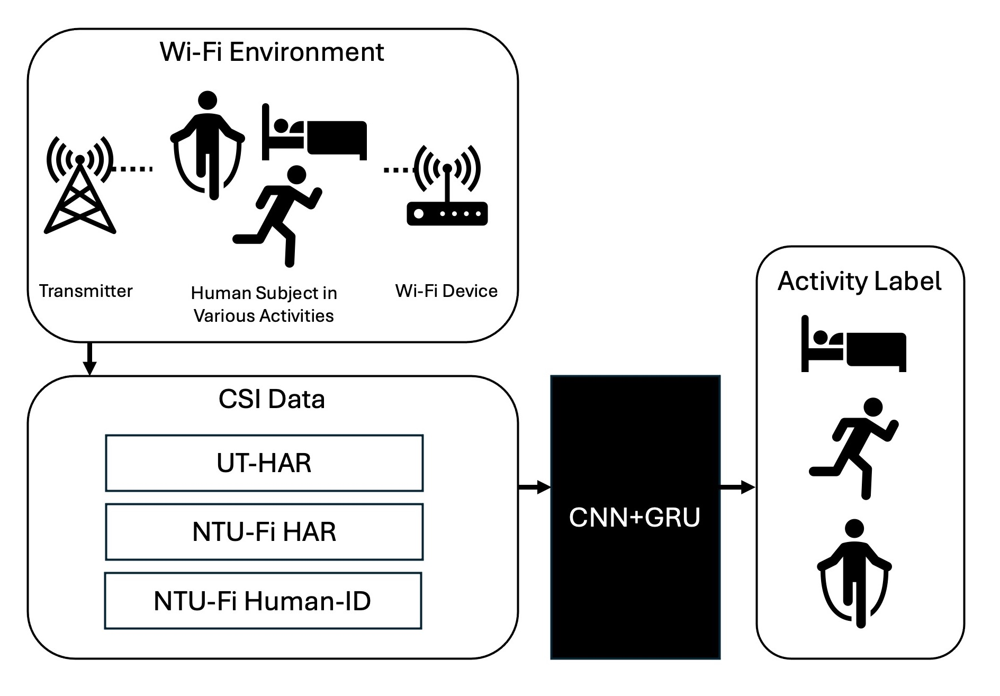
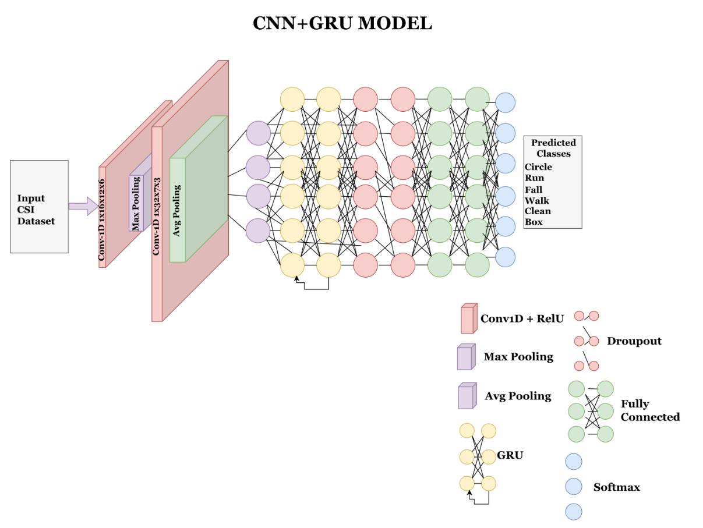
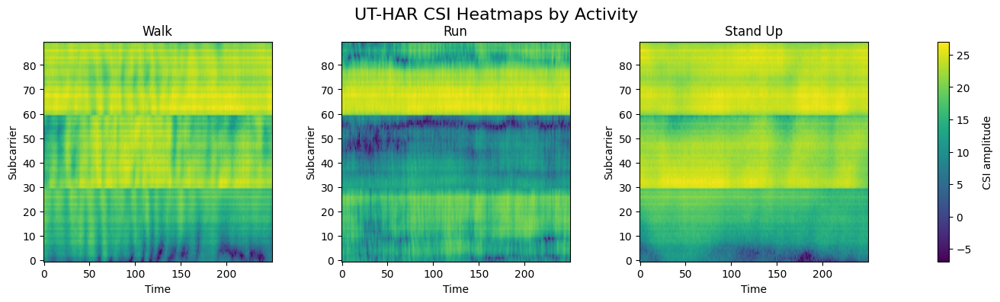
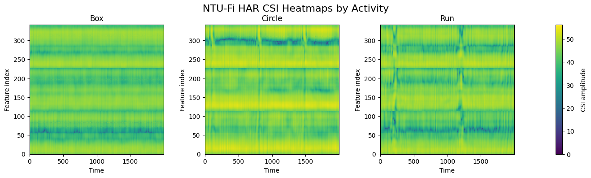
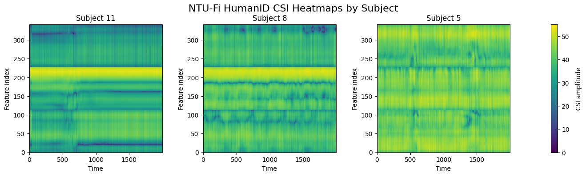
| Datasets | UT-HAR | NTU-Fi HAR | NTU-Fi Human-ID |
| Platform | Intel 5300 NIC | Atheros CSI Tool | Atheros CSI Tool |
| Category amount | 7 | 6 | 14 |
| Category names | lie down, fall, walk, pick up, run, sit down, stand up |
box, circle, clean, fall, run, walk |
gaits of 14 subjects |
| Data Size | (330,250) (antenna, subcarrier, packet) | (3,114,500) (antenna, subcarrier, packet) | (3,114,500) (antenna, subcarrier, packet) |
| Training samples | 3,977 | 936 | 546 |
| Testing samples | 996 | 264 | 294 |
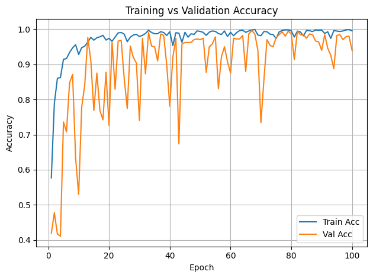
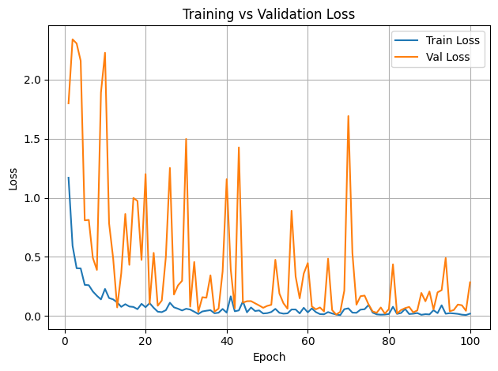
| Model | Accuracy | Precision | Recall | F1-Score |
| Our Model | 93.95 | 93.73 | 90.34 | 91.25 |
| Wakili et al. | 95.20 | 94.32 | 93.70 | 93.72 |
| Class | Our Model | Wakili et al. | ||||
| Precision | Recall | F1-Score | Precision | Recall | F1-Score | |
| Clean | 100 | 68 | 81 | 98 | 100 | 99 |
| Fall | 100 | 100 | 95 | 100 | 100 | 100 |
| Run | 90 | 100 | 95 | 100 | 98 | 99 |
| Walk | 99 | 96 | 98 | 100 | 98 | 99 |
| Box | 98 | 100 | 99 | |||
| Circle | 100 | 100 | 100 | |||
| Lie Down | 99 | 100 | 99 | |||
| Pick Up | 86 | 100 | 92 | |||
| Sit Down | 86 | 96 | 90 | |||
| Stand Up | 96 | 73 | 83 | |||
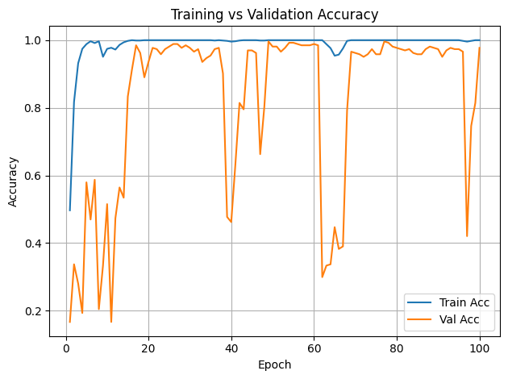
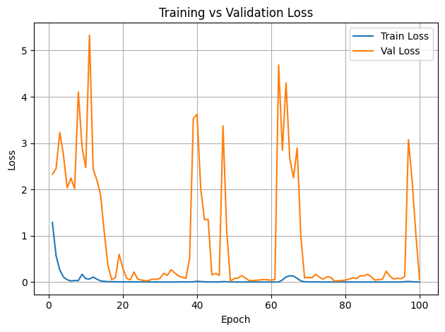
| Model | Accuracy | Precision | Recall | F1-Score |
| Our Model | 97.73 | 97.93 | 97.73 | 97.72 |
| Wakili et al. | 99.24 | 99.24 | 99.24 | 99.24 |
| Class | Our Model | Wakili et al. | ||||
| Precision | Recall | F1-Score | Precision | Recall | F1-Score | |
| Clean | 90 | 100 | 95 | 98 | 100 | 99 |
| Fall | 100 | 89 | 94 | 100 | 100 | 100 |
| Run | 98 | 100 | 99 | 100 | 98 | 99 |
| Walk | 100 | 98 | 99 | 100 | 98 | 99 |
| Box | 100 | 100 | 100 | 98 | 100 | 99 |
| Circle | 100 | 100 | 100 | 100 | 100 | 100 |
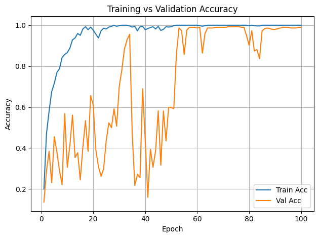
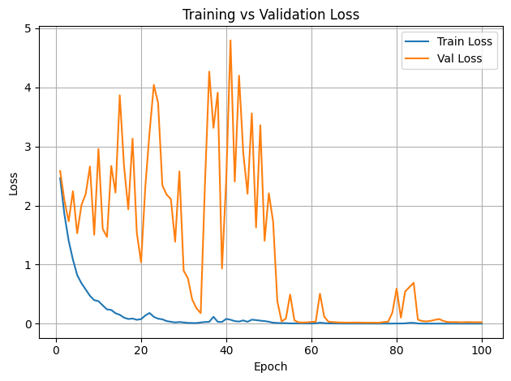
| Model | Accuracy | Precision | Recall | F1-Score |
| Our Model | 98.98 | 98.99 | 98.98 | 98.98 |
| Model | Precision | Recall | F1-Score |
| Subject 1 | 100 | 100 | 100 |
| Subject 2 | 100 | 100 | 100 |
| Subject 3 | 100 | 100 | 100 |
| Subject 4 | 100 | 100 | 100 |
| Subject 5 | 100 | 100 | 100 |
| Subject 6 | 100 | 100 | 100 |
| Subject 7 | 100 | 100 | 100 |
| Subject 8 | 100 | 100 | 100 |
| Subject 9 | 100 | 100 | 100 |
| Subject 10 | 95 | 90 | 93 |
| Subject 11 | 100 | 100 | 100 |
| Subject 12 | 91 | 95 | 93 |
| Subject 13 | 100 | 100 | 100 |
| Subject 14 | 100 | 100 | 100 |
| Dataset | Our Accuracy | Wakili et al.’s Accuracy |
| UT-HAR | 93.95 | 95.20 |
| NTU-Fi HAR | 97.73 | 99.24 |
| NTU-Fi Human-ID | 98.98 |
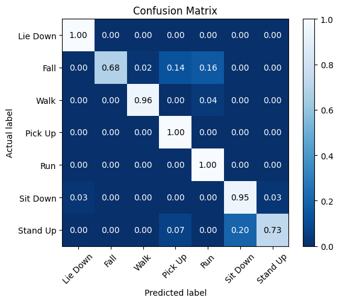
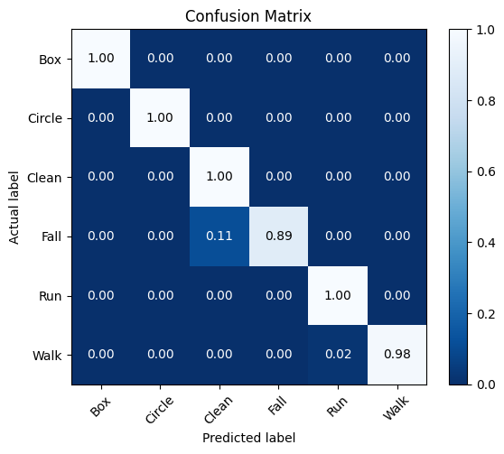
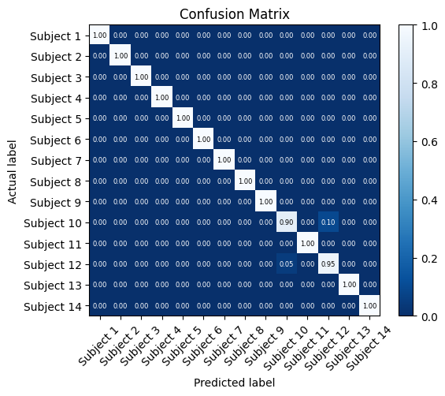